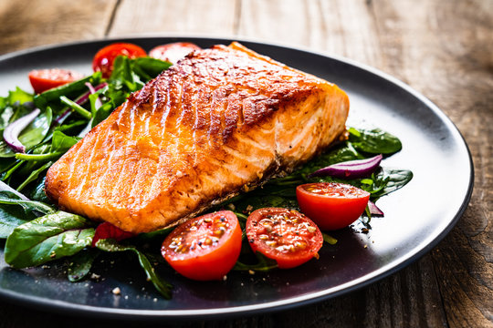
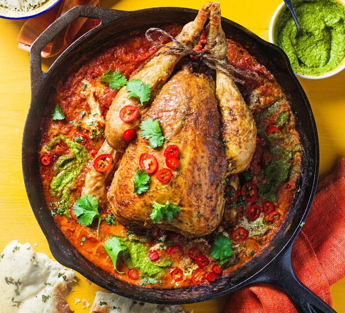
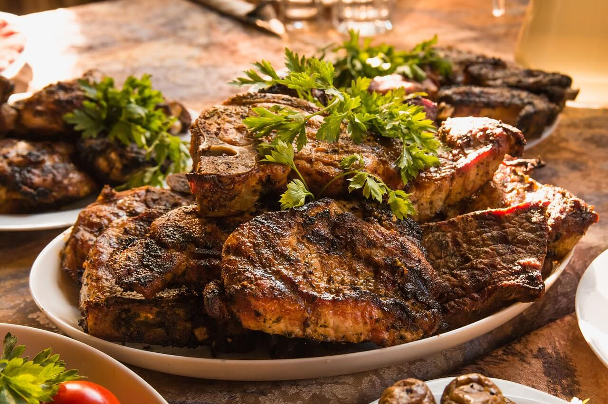
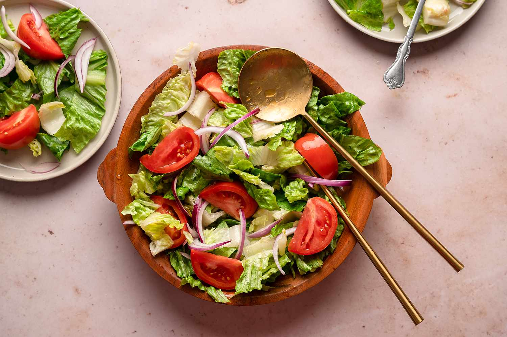
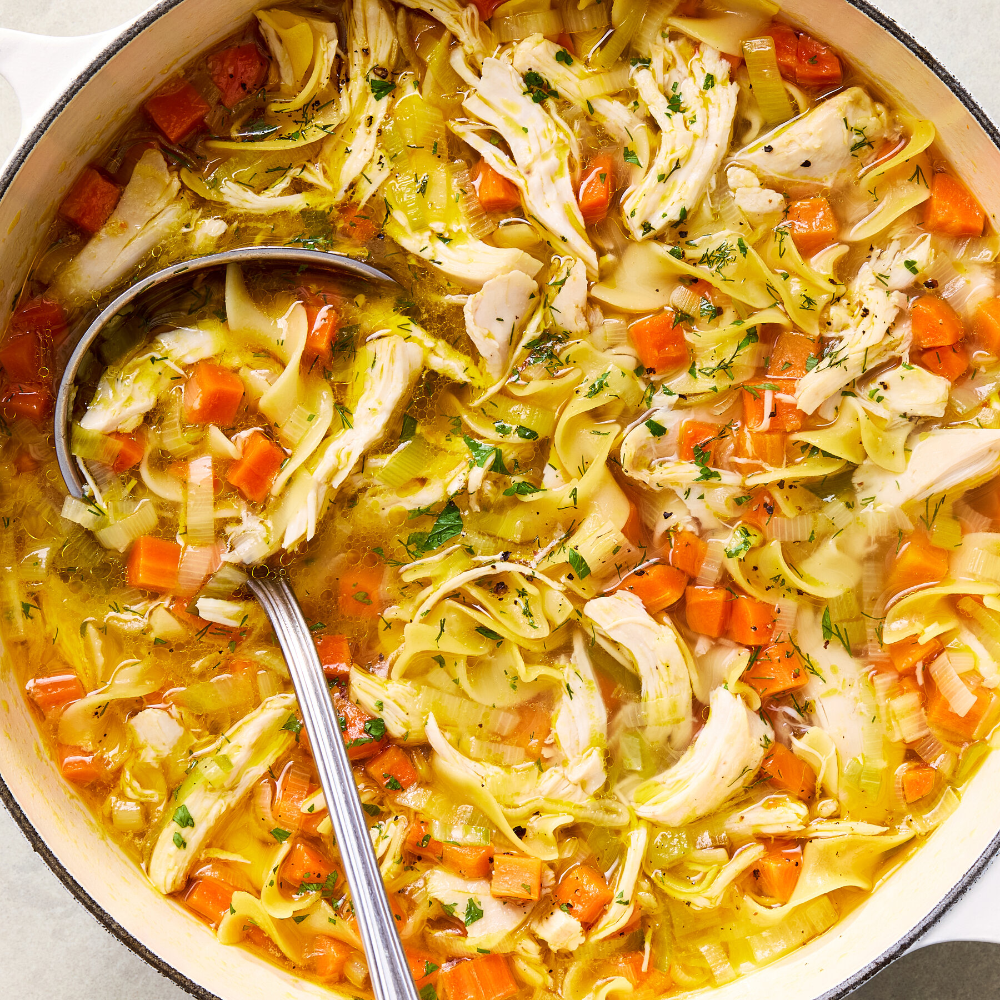

| الرمز | الوجبة | السعر | تفاصيل | اختيار |
|---|---|---|---|---|
| NM1 |  سمك |
110000 | ||
| وجبة بحرية لذيذة وجبة السمك تتميز بمذاق شهي وقوام طري من الداخل ومقرمش من الخارج. تُحضّر من سمك طازج متبل بتوابل لذيذة تعطيه نكهة مميزة وغنية. تُقدَّم مع مكونات جانبية تضيف توازنًا رائعًا للطعم وتجعله أكثر إشباعًا. تُعد هذه الوجبة خيارًا مثاليًا لمحبي الأطعمة البحرية الخفيفة والصحية. كما أنها غنية بالبروتين وتمنح الجسم طاقة مفيدة خلال اليوم. ويمكن تقديمها مع الأرز أو البطاطا أو السلطة حسب الرغبة. | ||||
| NM2 |  دجاج |
90000 | ||
| وجبة الدجاج تتميز بطعم شهي ومحبب لدى الجميع. تُحضّر من دجاج طازج ومتبّل جيدًا بالبهارات اللذيذة. تُطهى بعناية حتى تصبح طرية من الداخل ومقرمشة أو ذهبية من الخارج. تُقدَّم مع أطباق جانبية متنوعة مثل الأرز أو البطاطا أو السلطة. تُعد خيارًا مثاليًا لمن يبحث عن وجبة مشبعة ولذيذة في الوقت نفسه. كما أنها مناسبة للغداء أو العشاء وتناسب مختلف الأذواق. | ||||
| NM3 |  لحم |
120000 | ||
| وجبة اللحم من الوجبات الشهية والغنية بالمذاق القوي والمميز. تُحضّر من لحم طازج ومختار بعناية ليمنح طعمًا رائعًا وقيمة غذائية عالية. يمكن تقديمها مشوية أو مطهية مع البهارات والخضار حسب الرغبة. تُعد من الأطباق التي يحبها الكثيرون لأنها مشبعة وتناسب وجبة الغداء أو العشاء. كما أنها تمنح الجسم البروتين والطاقة وتُقدم عادةً مع الأرز أو الخبز أو السلطة. وتُعتبر من الخيارات المفضلة لمحبي الوجبات التقليدية واللذيذة. | ||||
| NM4 |  سلطات |
75000 | ||
| السلطات تتميز بأنها وجبات خفيفة ومنعشة ومليئة بالألوان الجميلة. تُحضّر من خضروات طازجة ومكونات صحية تضيف نكهة مميزة وقيمة غذائية عالية. يمكن تقديمها بعدة أشكال مثل سلطة الخضار أو سلطة الزبادي أو سلطة السيزر. تُعد خيارًا مثاليًا لمن يبحث عن وجبة خفيفة أو طبق جانبي مع الوجبات الرئيسية. كما أنها تمنح إحساسًا بالانتعاش وتناسب مختلف الأذواق. وتُعتبر من الخيارات الصحية التي تضيف توازنًا رائعًا إلى أي وجبة. | ||||
| NM5 |  حساء |
85000 | ||
| الحساء من الأطباق الخفيفة والدافئة التي يحبها الكثيرون. يُحضَّر من مكونات متنوعة مثل الخضار أو الدجاج أو اللحم أو العدس. يتميز بسهولة الهضم وقيمته الغذائية الجيدة، لذلك يناسب جميع الأعمار. كما أنه يساعد على الشعور بالدفء والراحة خاصة في الأجواء الباردة. يمكن تقديمه كطبق رئيسي خفيف أو كوجبة جانبية لفتح الشهية. ويُعد من الخيارات الصحية والمحببة على مائدة الطعام. | ||||